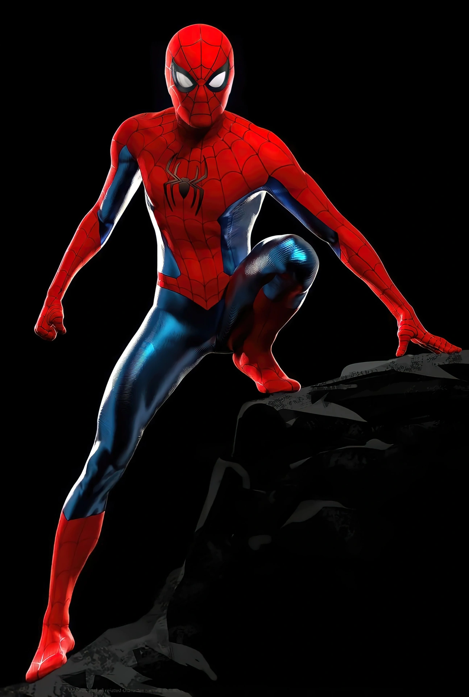
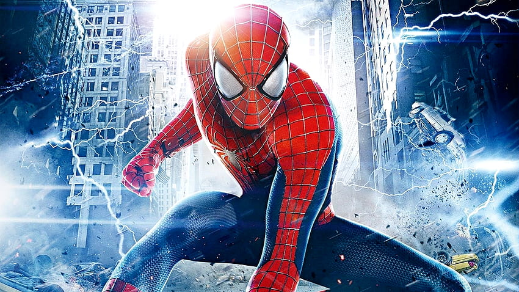
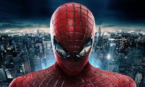
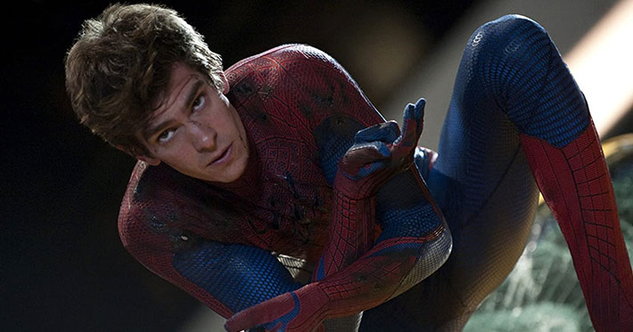

Bienvenido
Bienvenido a la página dedicada al Sorprendente Hombre Araña. Aquí encontrarás información sobre este icónico superhéroe de Marvel, imágenes, videos y enlaces para ampliar tu conocimiento sobre el trepamuros.
Desarrollador

Hola, soy [Jefferson Mardoqueo Chavez Campos], estudiante de desarrollo web. Me apasiona la tecnología y los superhéroes, especialmente el Hombre Araña.
Galería de Imágenes
¿QUE PASA EN EL SORPRENDENTE HOMBRE ARAÑA?
Peter Parker es un marginado estudiante de preparatoria cuyos padres lo abandonaron cuando era niño y fue criado por sus tíos. Igual que la mayoría de los adolescentes, Peter trata de descifrar quién es y cómo llegó a ser la persona que es actualmente.
¿CUAL ES EL DESARROLLO DEL HOMBRE ARAÑA
El desarrollo de la película comenzó simultáneamente cuando Sony anunció la cancelación de Spider-Man 4. Optando por un reinicio en lugar de otra secuela, el estudio anunció la fecha de lanzamiento para julio de 2012 bajo el título The Amazing Spider-Man. James Vanderbilt fue contratado para escribir el guion, mientras que Alvin Sargent y Steve Kloves ayudaron a afinarlo. El rodaje comenzó en diciembre de 2010 en Los Ángeles antes de trasladarse a la ciudad de Nueva York con la ayuda de RED Epic camera. La película entró en posproducción en abril de 2011. 
¿CUANDO FUE LANZADA LA PELICULA DEL SORPRENDENTE HOMBRE ARAÑA
The Amazing Spider-Man fue lanzada en 3D y en IMAX 3D el 3 de julio de 2012 en Estados Unidos y progresivamente a lo largo de esa misma semana en el resto de países hispanohablantes. También se desarrolló el videojuego de la película que salió al mercado días antes del estreno. La película tuvo un alto ingreso en taquillas, siendo el segundo reinicio más taquillero de la historia. Aun así, su recaudación no supera a ninguna de las tres anteriores. 
¿CUAL FUE EL GUION DEL SORPRENDENTE HOMBRE ARAÑA?
El guion mostró un enfoque totalmente diferente a comparación de la primera película de la trilogía anterior aunque respetando ciertas partes principales del origen del Hombre araña (y algunos de los personajes que son parte de ello, entre estos Ben Parker y May Parker) durante toda la trama desde la historia original de Peter Parker adaptada hasta el resto del argumento que se centra en los años de la preparatoria de los protagonistas y muestra más fidelidad a los cómics de la línea Ultimate creada por Brian Michael Bendis. 
ARGUMENTO
Cuando era niño, Peter Parker (Andrew Garfield) descubre que el estudio de su padre Richard Parker (Campbell Scott) ha sido saqueado. Su padre reúne documentos ocultos antes de que los padres de Peter lo lleven a quedarse con su tía May (Sally Field) y su tío Ben (Martin Sheen). Sus padres (incluida su madre Mary (Embeth Davidtz)) se van pero luego mueren en un accidente aéreo. Años más tarde, siendo un adolescente, Peter estudia en Midtown Science High School, donde es intimidado por Flash Thompson (Chris Zylka), y está interesado románticamente en la bella Gwen Stacy (Emma Stone), la hija del capitán de policía George Stacy (Denis Leary). Peter tiene interés en la fotografía y siempre anda con su cámara. En casa, Peter descubre los documentos de su padre y descubre que había estado trabajando con el científico Dr. Curtis Connors (Rhys Ifans) en Oscorp para combinar ADN humano y animal para curar enfermedades. Curt ni siquiera llamó una vez que Richard murió.
Videos
Este es el trailer de la primera pelicula del sorprendente hombre araña
Este es la parte final del sorprendente hombre araña 2
(Enlaces de Interés)
POR SI QUIEREN MAS IMFORMACION SOBRE EL SORPRENDENTE HOMBRE ARAÑA, AQUI LES DEJO 3 ENLACES PARA MAS INTERES SOBRE EL TEMA.